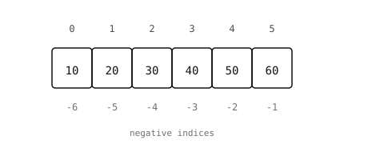

2.7. Listák¶
A lista értékek változtatható, rendezett sorozata. A karakterláncokkal és a bájtokkal ellentétben a listák bármilyen típusú értéket tárolhatnak, és az elemeket helyben módosíthatod, hozzáadhatod vagy eltávolíthatod.
2.7.1. Listák létrehozása¶
A szögletes zárójelek listaliterált hoznak létre:
empty = []
nums = [1, 2, 3]
mixed = [1, "two", 3.0, True, None] # any types
nested = [[1, 2], [3, 4], [5, 6]] # lists of lists
A list konstruktor bármilyen iterálható objektumból listát épít:
>>> list("abc")
['a', 'b', 'c']
>>> list(range(5))
[0, 1, 2, 3, 4]
2.7.2. Hossz, indexelés és szeletelés¶
A len() az elemek számát adja vissza. Az indexelés és a szeletelés ugyanúgy működik, mint a karakterláncoknál – a pozíciók 0-tól indulnak, a negatív indexek a végétől számolnak, és az érvényes tartományon kívüli szelet csendben levágódik, ahelyett, hogy kivételt váltana ki:
>>> nums = [10, 20, 30, 40, 50]
>>> len(nums)
5
>>> nums[0]
10
>>> nums[-1]
50
>>> nums[1:4]
[20, 30, 40]

A pozitív indexek elölről számolnak; a negatív indexek a végétől.¶
A szeletelési szintaxis egy slice objektum rövidített alakja, amelyet a Python a háttérben felépít. A nums[1:4] ugyanaz, mint a nums[slice(1, 4)]. Ritkán hozol létre ilyet kézzel, de a slice() időnként hasznos lehet egy szelet értékként való tárolásához, hogy később újra felhasználhasd:
head = slice(0, 3)
print(nums[head]) # [10, 20, 30]
print(letters[head]) # first three letters, same slice
2.7.3. Lista módosítása¶
A listák támogatják az indexelt és szeletelt helyben történő értékadást:
>>> nums = [10, 20, 30]
>>> nums[0] = 99
>>> nums
[99, 20, 30]
>>> nums[1:3] = [200, 300, 400] # slice can change the length
>>> nums
[99, 200, 300, 400]
A leggyakoribb listametódusok:
list.append()– egyetlen elem hozzáadása a végéhez.list.extend()– egy iterálható objektum minden elemének hozzáfűzése.list.insert()– beszúrás egy adott pozícióra.list.remove()– egy érték első előfordulásának törlése.list.pop()– egy elem eltávolítása és visszaadása (alapértelmezetten az utolsóé).list.clear()– minden elem eltávolítása.list.sort()– helyben rendezés. Add át areverse=Trueparamétert csökkenő sorrendhez.list.reverse()– helyben megfordítás.
>>> nums = []
>>> nums.append(1)
>>> nums.extend([2, 3])
>>> nums.insert(0, 99)
>>> nums
[99, 1, 2, 3]
>>> nums.pop()
3
>>> nums.sort()
>>> nums
[1, 2, 99]
Ezek a metódusok helyben módosítják a listát, és None értéket adnak vissza. A következő írása
nums = nums.sort() # nums is now None -- common bug
szinte soha nem az, amit szeretnél; az eredeti nums rendeződött, de az értékadás ezután felülírja a nevet a visszatérési értékkel. Vagy hívd meg a nums.sort() metódust külön sorban, vagy használd a beépített sorted() függvényt, hogy egy új, rendezett listát kapj vissza az eredeti módosítása nélkül.
2.7.4. Operátorok¶
A
+két listát fűz össze egy új listává.A
*megismétel egy listát.Az
intagságot vizsgál.
>>> [1, 2] + [3, 4]
[1, 2, 3, 4]
>>> [0] * 5
[0, 0, 0, 0, 0]
>>> 3 in [1, 2, 3]
True
2.7.5. Iterálás egy listán¶
Egy for ciklus sorrendben végigjárja az elemeket:
for n in [10, 20, 30]:
print(n)
2.7.6. Aliasok és módosítás¶
A lista egyetlen érték a memóriában; több név is mutathat ugyanarra a listára. Az egyik néven keresztüli módosítás minden más, ugyanarra a listára mutató néven keresztül látható.

Az a és a b is ugyanarra a listára mutat. Bármelyik néven keresztüli módosítás megváltoztatja azt, amit minden más név lát.¶
>>> a = [1, 2, 3]
>>> b = a
>>> a.append(4)
>>> b
[1, 2, 3, 4] # same object, change is visible
Független másolat készítéséhez szeleteld le a teljes listát, vagy hívd meg a list konstruktort:
>>> c = a[:] # or list(a)
>>> a.append(5)
>>> c
[1, 2, 3, 4] # c is unaffected
Ez csak a felső szintű listát másolja le; a beágyazott listák továbbra is megosztottak az eredeti és a másolat között.